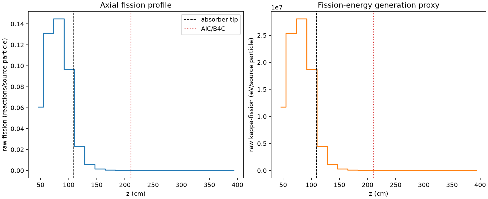
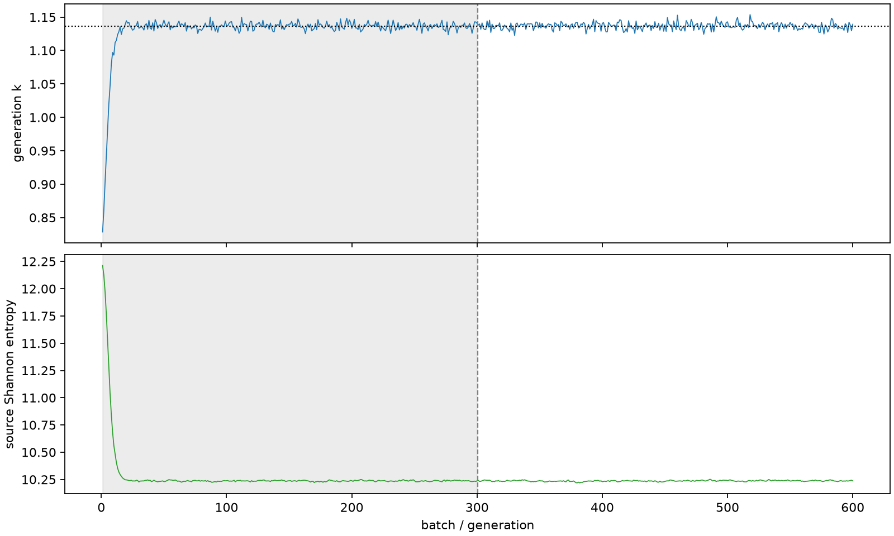

| field | value |
|---|---|
| experiment | V2-STAGE_128_OGRENCI_01-0022 |
| k | 1.1366237281742504 |
| MC standard error | 0.00017826114268684124 |
| seconds | 999.8913426179934 |
| acceptance | not_assessed |
| convergence | review_required |
Completed is output integrity only; physical and statistical review required. Zero tallies do not prove zero production or zero uncertainty.
| diagnostic | value |
|---|---|
| geometric fuel voxels | 5280 |
| zero fission tally voxels | 1905 |
| low signal fuel voxels | 2909 |
| low signal fission share | 7.708718003969075e-05 |
| low signal kappa share | 7.712186627377096e-05 |
| important fission share | 0.9500948548200112 |
| previous filter included | 2371 |
| duration estimate s | 1562.5173488400023 |
| actual minus estimate s | -562.626006222009 |
| fission relative MC error | statistics |
|---|---|
| all_geometric_fuel | {"voxels": 5280, "positive_mean_voxels": 3375, "zero_mean_voxels": 1905, "undefined_relative_error_voxels": 1905, "median": 0.03926292277796987, "p95": 0.9266761195797775, "maximum": 1.0000000000000002} |
| low_signal | {"voxels": 2909, "positive_mean_voxels": 1004, "zero_mean_voxels": 1905, "undefined_relative_error_voxels": 1905, "median": 0.5565372395460169, "p95": 1.0, "maximum": 1.0000000000000002} |
| important_95pct | {"voxels": 1131, "positive_mean_voxels": 1131, "zero_mean_voxels": 0, "undefined_relative_error_voxels": 0, "median": 0.004916525942992699, "p95": 0.009539638755536211, "maximum": 0.01154981617898898} |
| outside_previous_filter | {"voxels": 2909, "positive_mean_voxels": 1004, "zero_mean_voxels": 1905, "undefined_relative_error_voxels": 1905, "median": 0.5565372395460169, "p95": 1.0, "maximum": 1.0000000000000002} |
| kappa_fission relative MC error | statistics |
|---|---|
| all_geometric_fuel | {"voxels": 5280, "positive_mean_voxels": 3375, "zero_mean_voxels": 1905, "undefined_relative_error_voxels": 1905, "median": 0.039199693259395665, "p95": 0.92579424356557, "maximum": 1.0000000000000002} |
| low_signal | {"voxels": 2909, "positive_mean_voxels": 1004, "zero_mean_voxels": 1905, "undefined_relative_error_voxels": 1905, "median": 0.5553967609106212, "p95": 1.0, "maximum": 1.0000000000000002} |
| important_95pct | {"voxels": 1131, "positive_mean_voxels": 1131, "zero_mean_voxels": 0, "undefined_relative_error_voxels": 0, "median": 0.0049105230012049155, "p95": 0.00952738931427921, "maximum": 0.01153447476210326} |
| outside_previous_filter | {"voxels": 2909, "positive_mean_voxels": 1004, "zero_mean_voxels": 1905, "undefined_relative_error_voxels": 1905, "median": 0.5553967609106212, "p95": 1.0, "maximum": 1.0000000000000002} |
| axial bin | fission share | kappa-fission share |
|---|---|---|
| 1 | 0.13077769057954627 | 0.13077979034750617 |
| 2 | 0.28247235865929377 | 0.2824626536832195 |
| 3 | 0.3120270728340661 | 0.31201612622317343 |
| 4 | 0.20826938209904738 | 0.20826533660494448 |
| 5 | 0.04992621237097083 | 0.04994259243616705 |
| 6 | 0.012300738625613008 | 0.012305333824023641 |
| 7 | 0.003132189170623771 | 0.0031333932159000044 |
| 8 | 0.0008068883690565675 | 0.0008071948681265611 |
| 9 | 0.00021445841101915377 | 0.0002145364781593105 |
| 10 | 5.453423329963322e-05 | 5.456060822303094e-05 |
| 11 | 1.3192608382578365e-05 | 1.3198239875608202e-05 |
| 12 | 4.339009959616391e-06 | 4.340614773323675e-06 |
| 13 | 8.58123824045743e-07 | 8.580104118235992e-07 |
| 14 | 8.490529730101608e-08 | 8.484549595467474e-08 |
| 15 | 0.0 | 0.0 |
| 16 | 0.0 | 0.0 |
| 17 | 0.0 | 0.0 |
| 18 | 0.0 | 0.0 |
| 19 | 0.0 | 0.0 |
| 20 | 0.0 | 0.0 |
Histories include the inactive-to-active transition at batch 300. kappa-fission approximates fission energy production, not total heat deposition.

